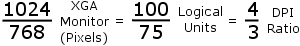
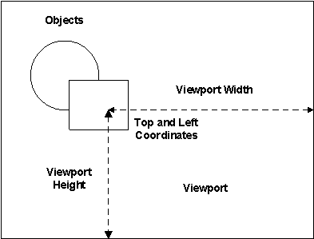
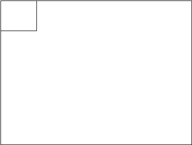

What makes up a picture
A picture consists of the following components:
Document
Viewport
Window
The Document
A picture is a document object. When you open a new picture in DeltaV Operate, you create a document. The document is the ActiveX container for your DeltaV Operate picture. Look at the document as the entire landscape of your picture.
The document has a logical coordinate system . To understand what this means, let's go back to the discussion of object-oriented graphics. The topic The Object-Oriented Nature of Pictures discussed how DeltaV Operate uses object-oriented, rather than pixel-based, graphics. DeltaV Operate's picture sizing methodology works in a similar way. A logical picture size means that your document size is based on logical units, not pixels. The unit of measurement is arbitrary; you can use any logical units you want. DeltaV Operate makes this possible by calculating a one-to-one relationship between the pixel size of your monitor and the logical units of your document, while maintaining the dpi (dots per inch) ratio of your monitor.
For example, the standard screen resolution for an XGA monitor is 1024 × 768 pixels. In DeltaV Operate, the default size of your picture, viewed with this monitor, is not 1024×768. Rather, it is 100×75 (logical units), as illustrated in the following calculation.

Autoscaling
A DeltaV Operate document establishes the logical-units-to-pixels ratio when you create a new picture, and automatically adjusts the ratio when you change the screen resolution of your screen. This way, your picture appears to scale no matter what monitor you view it on. When you make any changes to the document, viewport, or window size, DeltaV Operate maintains the 4:3 or 16:10 aspect ratio, depending on the screen resolution of your monitor, so that your objects maintain a consistent size on your screen.
To create pictures that autoscale the same on all nodes, it is critical that you create pictures that have a dpi (dots per inch) aspect ratio of 4:3 or 16:10. As long as the aspect ratio corresponds to the screen resolution of your monitor, you can create pictures on any node and they will autoscale correctly.
By default, the document width and height are set by DeltaV Operate. We strongly discourage changing this ratio. These settings are strictly intended for advanced users. If you choose to change these settings, the ratio should match aspect ratio for the screen resolution of your monitor. These settings are found in the User Preferences dialog box.
The Viewport
The viewport is the mapping system in the DeltaV Operate document. Like the document, it is a logical system; it reads the picture's logical coordinates to determine its size, and then maps the coordinates onto the window. The type of coordinate system is not relevant to the viewport; the viewport converts an arbitrary measurement and delivers it to the window in the dimensions that you specify.
Taking the example above, a picture with a width of 100 logical units and a height of 75 logical units maintains a logical ratio with coordinates 0, 0 at the top left corner of the picture. This is illustrated in the following diagram.
Look at the viewport as the lens of a camera. For example, if you have a picture containing a circle and a rectangle, and you define the viewport to begin as shown in the following picture:

Then the picture will be displayed as shown in the following figure:

If you resize a picture, then modify the viewport width or height, the picture's logical coordinate system will be remapped. If this happens, objects in your pictures may appear skewed when resizing or autoscaling. To avoid this problem, we recommend that you do not modify the viewport height or width once you have resized a picture.
The Window
The window is the available screen area of the document; it sets the boundaries for what you can display in your picture. The window preserves a portion of the screen for various window decorations, such as title bars and sizing borders, for displaying your picture. If the document is the landscape, and the viewport is the camera lens, than the window is the viewfinder; it is what you actually see on the screen. For more information on window decorations, refer to Selecting Window Properties in the topic Planning Your Pictures.
The following figure shows the relationship between the window and screen in a picture.